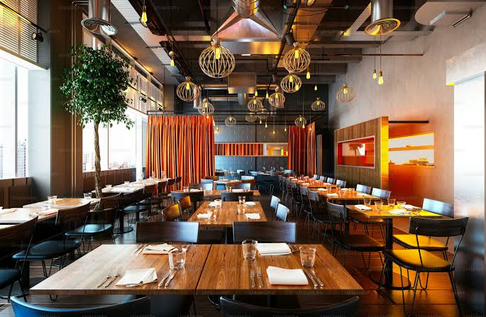

Call our service for more enquiries
Musa's kitchen was lunched in the year 2009, it was considered as one, if not the best resturant in New york city. We are delighted to announce that Musa's kitchen will be live in Toronto as soon as possible, the fantastic venue will be right after the CN Tower... for more enquiries about our location email us at Email
Our foods are
•Rice and cooked chiken: going for only 700 dollers
•Beef shawarma: for only 90 dollars
•Cooked bread: going for 32 dollars
You might find difficulty in finding the food you want so heres the solution☝️❤️
In summary, Musa's Kitchen has established a reputation for excellence since 2009, offering a premium dining experience conveniently located near the CN Tower. We pride ourselves on delivering high-quality, flavorful meals, including our signature rice and chicken, savory beef shawarma, and fresh bread. With our commitment to affordability, we invite you to enjoy our delicious menu at competitive prices; visit us today to discover why we are a top destination for food lovers in the city.
